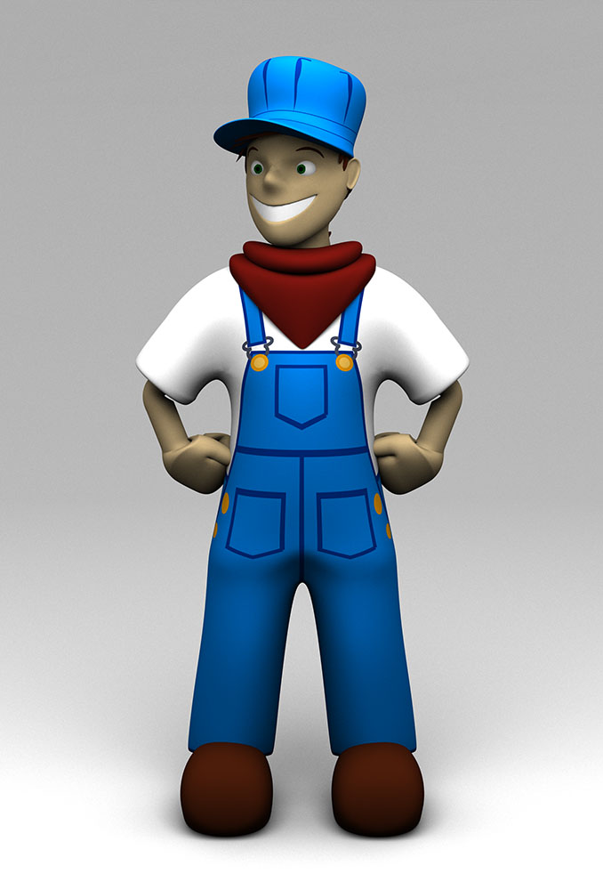

The Engineer (2010)
I am an engineer, and I can do anything! Wait! Not that kind of engineer! This happy guy has been my best effort in character design so far. I was looking to create scenes of characters to mix with the trains motif (see Trains 2009). I was also looking for a style that was simpler than one explored with Arthur Kunstlinger (2008) that could be expanded to larger scenes more easily. It did end up being simpler, but still took me 5 months to finish! Aye, aye, aye. This stuff takes a long time! Still, this is a pretty good compromise, and if I ever do start making scenes with more characters, it will probably follow the same approach used with this little engineer.
This model was created with Blender, with the texture images created with Adobe Illustrator. I went back and rendered this version with Yafaray in 2016, since I like the look of Yafaray so much. Rendering the high resolution version took less than an hour, since it uses direct lighting and a single, large area light.
© W. Rhett Davis 2010, 2016